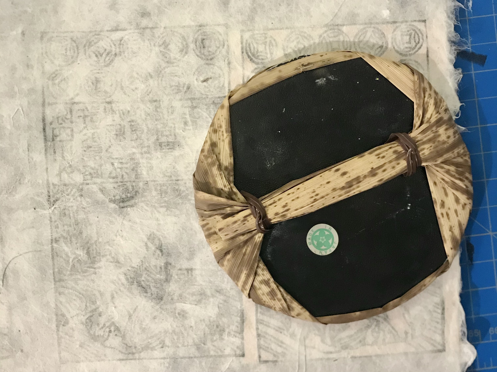
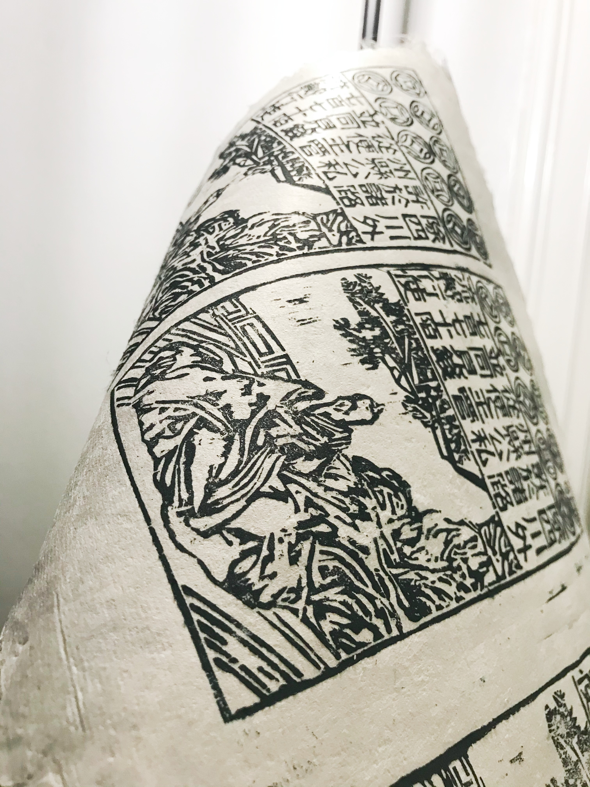
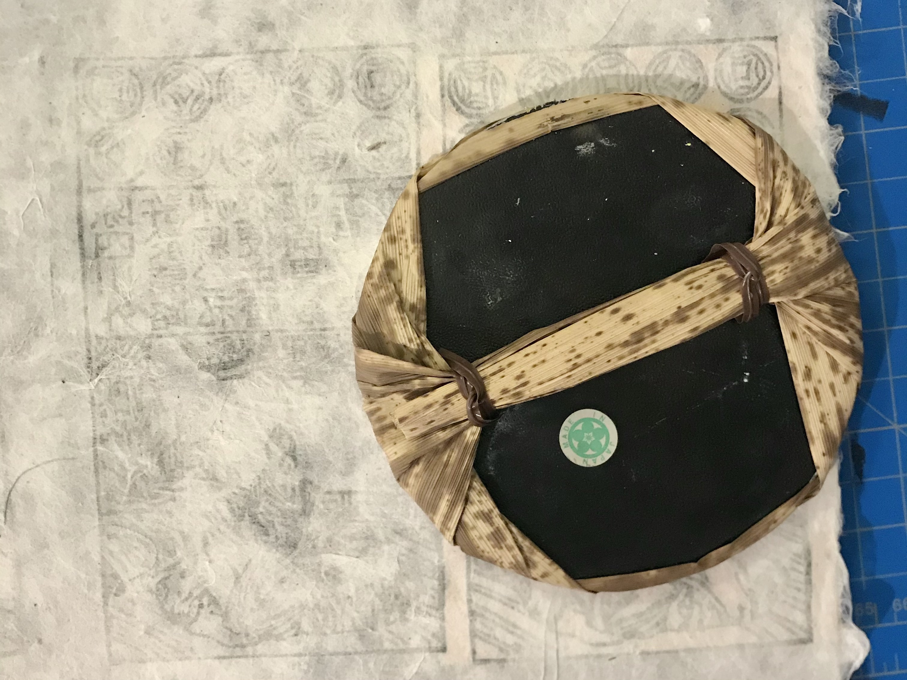
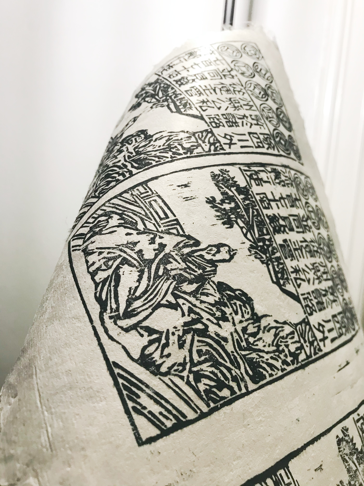

counterfeit huizi, 2021
woodblock print on handmade mulberry paper with silk inclusions, 10 cm x 17.6 cm
A material and bodily investigation of the memorials of Jiang Hui (蒋輝) a master woodblock carver and counterfeiter of the paper note huizi (會子) during the late Song Dynasty. The process involved making mulberry paper embedded with silk threads, carving the woodblock based on references of huizi and details in Jiang Hui’s memorials, then printing the notes as black impressions on the handmade paper. I approached this project with questions about the archetypes of professions in Song society, and how different laborers were empowered by their proximity to officiality. For example, how were printmakers who made poems different from printmakers who made bank notes? What made different printing practices, skills, or materials more “official” than others? Questions like this were primed by Thomas Patrick Kelly in “Clawed Skin: The Literary Inscription of Things in Sixteenth Century China” where they discuss the disciplinary chasm in “the broader relationship between writing with a brush and writing with a knife...creating new role types for the scholar (as an artisan), the artisan (as a scholar), and the merchant (as both scholar and artisan).”
Moreover, I was interested in who or what was the authority in the manufacture of paper currency. Was it the overseeing official, the carver, the source of the materials, the tools, or the text that gave value to bank inscriptions on paper? The existence of counterfeits suggests that the authority comes from the materials and the visual content rather than the people who made it. As such, I’m also wondering how the printmaker becomes a counterfeiter. What does the printmaker’s ability to undermine the emperor’s power by exposing doubts about the currency suggest about the power of this labor sector?
Mandarin text reads: “除四川外 / 許於諸路 / 州縣公私 / 從便主管 / 並同見錢 / 七百七十陌 / 流轉行使”
Translation as: “With the exception of Szechwan, this may be circulated in the various provinces and districts to make public and private payments representing 770 cash per string.”

 


